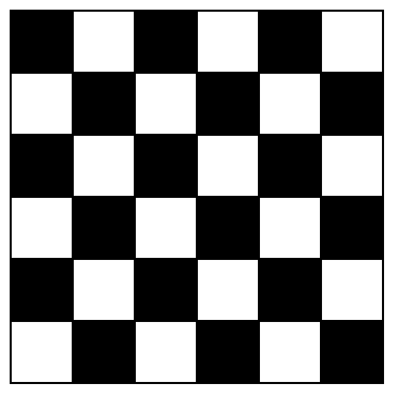

A common approach when desiging algorithms that play battleship is to have two states: Hunt and Kill. When we are in the Hunt state, we want to find a square with part of an unsunk ship as quickly as possible and switch to Kill and fire at adjacent squares.
A challenge therefore is to find a good way of hunting. We informally state this problem as:
Find a firing pattern such that any ship on the board can be found (no matter how ships are placed, at least 1 part of the ship can get fired on) and the number of shots fired is a minimum.
A good start is to overlay a checker-board pattern atop the board, and only fire at the black squares. We can do this because even the smallest ship (2 squares) will lie on a black and white square, so we need only to fire at one of the colours – eventually one shot will find a part of some ship.
First define an \( l \)-ship as a ship of length \( l \). Consider what happens when the 2-ship is sunk. Each ship is now at least length 3, so we can use this information and obtain a firing pattern (a mask) that has fewer black squares and yet finds all ships.
Let the length of the smallest unsunk ship be \( l \). We know this length because the opponent tells us when we've sunk a ship. Consider a \( l \times l \) square with the diagonal all coloured black (similar to the identity matrix of size \( l \)).
Claim: In an \( l \times l \) board, if we overlay the diagonal mask on the board and fire at only black squares, we can find an \(l\)-ship no matter how it is orientated or positioned.
Proof: Say that the ship is vertical, and it is in column \( j \). No matter which column it is in, there is one row \( i = j \) such that we have a black square at \((i, j)\). The case for when the ship is horizontal is symmetric.Additionally, any one ship lies on at most one black square. So this mask has the minimum number of shots required to find one \(l\)-ship.
Now consider repeating the masks in a 2x2 tiling. We want to show that no matter how we place an \(l\)-ship, it will lie on at least one black square. Notice that along any column or row, the number of white squares between any two black squares is \(l-1\).
Assume that the ship is placed horizontally. (The case when the ship is vertical is again symmetric). We need to consider a few cases for the position of the “head” of the ship. Let the position of the first black square be \( x \), and the distance from the black square to the head of the ship be \( d \). Then we need to consider a few cases for \( d \):
\( 0 < d < l \): columns occupied is in [\(x + d\), \(x + d + (l - 1)\)]. We know that the next black square is at column \( x + l \). Rearranging expressions in the range, we get [\( x + d \), \( x + l + (d - 1) \)], which includes \( x + l \).
No matter the value for \( d \) or \( x \) the \(l\)-ship lies only on one black square, which shows that the number of shots fired will be a minimum.
When tiling this mask repeatedly to cover the whole board, we use induction to prove that any \( l \)-ship or larger will lie on one black square. For the inductive step assume that the \( n \times n \) tiling is ok and consider the \( (n + 1) \times (n + 1) \) tiling.
As the diagram shows we can split the newly added row/column of masks to overlapping 2x2 masks. Since any \(l\)-ship lies on at most 2 masks, showing that the 2x2 masks finds all ships completes the proof. When we tile the original 10x10 board we just cut off any excess pieces from the mask:
Larger ships \( \geq l \) may span more than 2 masks at once. In this case we can still find all ships because we find any ship of length \( l \) in any 2x2 tiling of the mask.
A fun problem to consider is what is the expected number of shots required to find and sink a single \( 2 \)-ship on an \(n \times n\) board. We know that we need to fire using the checkerboard pattern, so the number of shots needed at most is \( n^2 / 2 \). Assuming that the ship is placed on any position with equal probability we find that: $$ \begin{aligned} E(X) &= 1 * P(\text{hit}) + 2 P(\text{1 miss}) P(\text{hit}) + 3 P(\text{1 miss}) P(\text{2 miss}) P(\text{hit}) + \ldots \\ &= \frac{1}{n^2/2} + 2 \times \frac{n^2/2 - 1}{n^2/2} \frac{1}{n^2/2-1} + \ldots \\ &= \frac{1}{n^2/2}\sum_{i=1}^{n^2/2}{i} = \frac{1}{n^2/2}\frac{n^2/2(n^2/2 + 1)}{2} \\ &= \frac{n^2/2+1}{2} \end{aligned} $$
Once we found a ship we fire at the adjacent squares – on average we need \( (1 + 2 + 3 + 4)/4 = 2.5 \) shots to sink it. Therefore the expected value for the number of shots is: $$ \frac{n^2/2+1}{2} + 2.5 $$
Generalising the above calculation should be straightforward — but finding the precise number of black tiles on the \( n \times n \) board when we are finding \( l \)-ships where \( l \neq 2 \) is tricky.